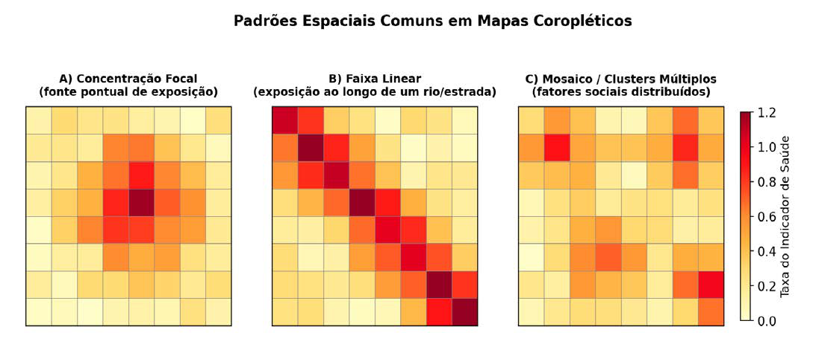

Módulo 3 | Aula 6
Análise Espacial de Dados – Área
Introdução
A partir do que você explorou anteriormente e do mapa temático elaborado nas últimas aulas, avançaremos agora para a base conceitual da análise de dados organizados por áreas geográficas. Esse tipo de análise utiliza informações agregadas em polígonos territoriais como municípios, bairros, setores censitários ou estados e é amplamente empregada no contexto do Sistema Único de Saúde (SUS).
Isso porque grande parte dos dados provenientes de sistemas de informação, como o SINAN (Sistema de Informação de Agravos de Notificação), o SIM (Sistema de Informações sobre Mortalidade) e os dados demográficos do IBGE, é disponibilizada de forma agregada segundo unidades administrativas (Carvalho & Souza-Santos, 2005; Câmara, et al., 2004).
Essa abordagem permite investigar como doenças, fatores de risco e serviços de saúde se distribuem no território e é especialmente útil para:
- Identificar padrões espaciais de doenças, observando onde há maior ou menor ocorrência.
- Detectar áreas de risco (clusters), revelando regiões prioritárias para intervenção.
- Relacionar saúde com fatores socioambientais, como saneamento, renda, densidade populacional e condições de moradia.
- Apoiar o planejamento dos serviços de saúde, contribuindo para definir a localização de hospitais, postos e ações de vacinação.
- Monitorar e prever surtos, acompanhando a evolução espacial e temporal das doenças.
- Reduzir desigualdades em saúde, ao evidenciar desigualdades territoriais de acesso e vulnerabilidade.
Em síntese, a análise de área é investigar padrões espaciais na distribuição de taxas ou indicadores de saúde, como taxas de mortalidade, coeficientes de incidência ou indicadores socioeconômicos. A questão central é entender se as áreas com valores altos (ou baixos) de um indicador tendem a se agrupar no espaço, ou se sua distribuição é aleatória (Câmara, et al., 2004).
Figura 1 - Padrões Espaciais Comuns em Mapas Coropléticos.

Fonte: Elaborado pelos autores (2026).
Ao elaborar mapas que mostram como eventos de saúde se distribuem no território, podemos observar diferentes padrões espaciais. A figura apresenta três exemplos fictícios que ilustram situações comuns.
No primeiro quadro, à esquerda, vemos que as taxas mais altas — indicadas pelas cores mais intensas — se concentram ao redor de uma única área. Esse tipo de padrão sugere a presença de uma fonte específica de exposição, como uma indústria que libera poluentes.
No segundo quadro, ao centro, as maiores taxas aparecem alinhadas, formando uma faixa contínua. Esse formato linear pode indicar que a exposição segue o traçado de algum elemento geográfico, como uma estrada ou um rio.
Já no terceiro quadro, observamos um padrão em mosaico: as áreas com taxas mais elevadas se distribuem em vários pontos, formando diversos aglomerados (clusters). Esse comportamento pode estar associado a múltiplas fontes de exposição espalhadas pelo território, refletindo características sociais e organizacionais das cidades (Santos & Barcellos, 2006).